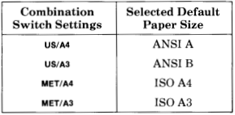
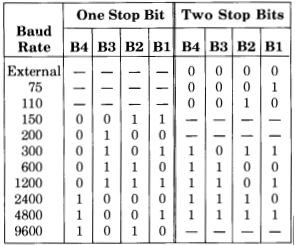

This is the Digital LVP-16 pen plotter. It's essentially the same as the classic HP7475a model, and was introduced in 1983 selling for US$1895.
The plotter uses up to 6 pens. There's a selection of colors of original pens, not all of them draw very well. Additionally there are Sharpie adapters if you want to use your own pens.
Check that the paper-size DIP switch at the rear of the printer is set appropriately, to "A4"/Letter or "B4"/B size.
Lift the paper-release lever. Place a sheet with its far edge just behind the roller, by the mark. Lower the paper-release lever.
Then check the P1 and P2 "scaling points". Think of these as the zero-point (P1), which is at the bottom left of a landscape-oriented page, and the opposite corner (P2), which is at the top right of a landcape-oriented page.
Press the P1 button, and the pen and paper will move to the P1 position (pen to the far left, and near the "bottom" edge of the page, when looking at the page as a landscape). Then press the P2 button, and the pen and paper will move to the opposite corner. Check that the paper is still held correctly at both these points.
Then you're ready to print.
You can print any document from Windows or MacOS. Be careful: complex documents will take a very long time to print. Please be considerate! Start with simple line-drawings, and then try small amounts of shading or text.
You can also print directly using the printer's raw "HPGL" format.
For example you can export Inkscape drawings in HPGL. There are also HPGL connectors for Processing, D3.js and so on.
To print a raw HPGL file (usually ".plt" file extension) from a Linux or MacOS command-line:, first check that you have installed the printer named `penplot1_local`:
lpstat -p -dThen, to print an HPGL file named 'FILENAME':
lp -d penplot1_local -o raw FILENAME
You shouldn't need to change the other settings. The correct baud rate is 9600, per this picture:
